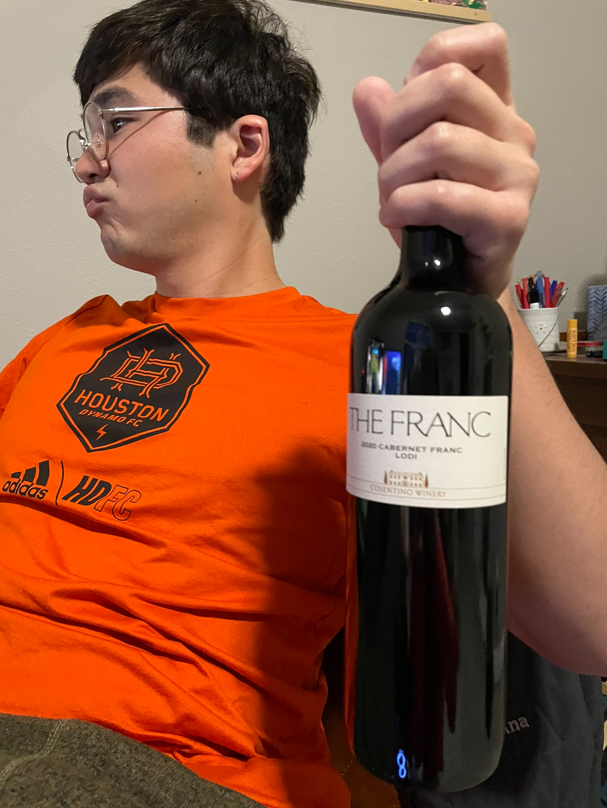

Cabernet Franc
What is it?
Cabernet Franc is a red wine grape (it is technically a "black" grape) and is primarily grown in France. It is actually the parent grape of both Merlot and Cabernet Sauvignon! Cabernet Franc is commonly used in red blends, and it is one of the twenty most planted varieties of wine grape.
Primary flavors include strawberry, raspberry, bell pepper, crushed gravel, and chili pepper. Taste can vary by region, with wines from California (such as the one we tasted) being more fruit-forward, jammy, and alcoholic). Suggested pairings are tomato-based dishes, vinegar-based dishes, or rich black beluga lentils. We had this wine with vegetarian Italian sausage pasta, which paired well.
Molly's Rating and Tasting Notes
8.1. I was surprised by how much I enjoyed this wine. I honestly found my glass empty and hadn't thought I was going to enjoy it enough to finish the glass. On the surface, it isn't really for me. It's not at all sweet and has a very dry finish - so dry that my mouth was parched after a sip. However, there is a note of strawberry tempered by a scent reminiscent to those chocolate-covered blueberries. The fruitiness is met with a flavor somewhat similar to old paper or a musty room (much more pleasant when imbibing than when written). All in all, I'd have a glass or two every now and then, and I would recommend this particular wine to people who like interesting red wines or trying something new.
Ryan's Rating and Tasting Notes
8.7. On the nose I get blueberry, mole (the sauce), sourdough bread, and old library. There's a little bit of pepper mixed with dust as well. On the tongue it is very dry. If a moist mouth is your malady, fear not for this is your remedy. It is a liquid that takes more than it gives, leaving you quite parched. As for the taste, it has notes of strawberry, raspberry, and white pepper. As in the nose, there is a memory of an old, musty bookstore. Although it isn't sweet, there is a little bit of a jamminess as well. Underneath all of that I find a bit of smoke and perhaps pipe tobacco too, adding an extra layer of complexity. The wine isn't very acidic or full-bodied or sweet. It just exists and dissipates without too much attention or turbulence. The finish isn't very long, but the taste lingers just long enough to let you ruminate on all of the different flavors you experienced. Overall a very nice and interesting wine. One I would very much welcome into my abode any time of the year.
References
[1] Madeline Puckette and Justin Hammack. Wine Folly: The Master Guide. Avery - A Penguin Imprint, New York, NY, 2018.
[2] "Cabernet Franc. https://winefolly.com/grapes/cabernet-franc/Accessed: January 2024.
Wines we haven't finished
- Week 42 - Tawny Port